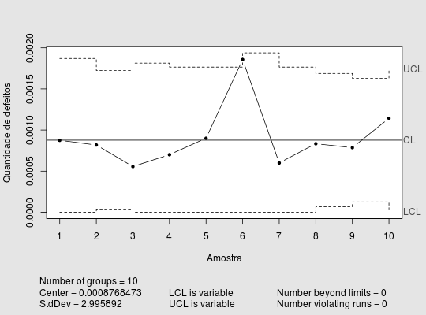

Dados referentes ao monitoramento do processo de produção de cabos elétricos. Foi registrada a quantidade de defeitos encontrados em amostras de determinada quantidade de metros de cabo.
Um data.frame com 10 observações e 2 variáveis, em que
metdefCOSTA et al. (2010), pág. 233.
data(EpprechtTb8.16)#> Warning: data set ‘EpprechtTb8.16’ not foundstr(EpprechtTb8.16)#> 'data.frame': 10 obs. of 2 variables: #> $ met: int 8000 11000 9000 10000 10000 7000 10000 12000 14000 10500 #> $ def: int 7 9 5 7 9 13 6 10 11 12library(qcc) qcc(EpprechtTb8.16$def, type = "u", sizes = EpprechtTb8.16$met, xlab = "Amostra", ylab = "Quantidade de defeitos", title = " ")#> List of 11 #> $ call : language qcc(data = EpprechtTb8.16$def, type = "u", sizes = EpprechtTb8.16$met, xlab = "Amostra", ylab = "Quantidade de defeitos", title = " ") #> $ type : chr "u" #> $ data.name : chr "EpprechtTb8.16$def" #> $ data : int [1:10, 1] 7 9 5 7 9 13 6 10 11 12 #> ..- attr(*, "dimnames")=List of 2 #> $ statistics: Named num [1:10] 0.000875 0.000818 0.000556 0.0007 0.0009 ... #> ..- attr(*, "names")= chr [1:10] "1" "2" "3" "4" ... #> $ sizes : int [1:10] 8000 11000 9000 10000 10000 7000 10000 12000 14000 10500 #> $ center : num 0.000877 #> $ std.dev : num 3 #> $ nsigmas : num 3 #> $ limits : num [1:10, 1:2] 0.00 2.98e-05 0.00 0.00 0.00 ... #> ..- attr(*, "dimnames")=List of 2 #> $ violations:List of 2 #> - attr(*, "class")= chr "qcc"